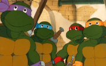
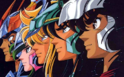
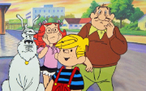
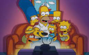
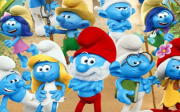
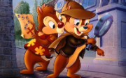
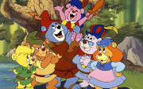

Na década de 1980, desenhos animados como "He-Man", "She-Ra" e "ThunderCats" conquistaram o público com suas aventuras épicas e personagens heroicos, tornando-se referências duradouras na cultura pop.

"As Tartarugas Ninja" começaram como uma série de quadrinhos em 1984, apresentando quatro tartarugas mutantes treinadas em artes marciais por seu mestre, Splinter. O filme "As Tartarugas Ninja" de 1990, dirigido por Steve Barron, solidificou a popularidade da franquia, oferecendo uma mistura única de ação e comédia. Ao longo dos anos, as Tartarugas Ninja expandiram-se para desenhos animados, filmes e produtos diversos, tornando-se ícones culturais duradouros conhecidos por sua camaradagem, humor e habilidades de combate. O legado das Tartarugas Ninja persiste, continuando a encantar fãs de todas as idades com suas aventuras na cidade de Nova York.

"Cavaleiros do Zodíaco" é uma icônica série de anime e mangá criada por Masami Kurumada. A história segue jovens guerreiros chamados Cavaleiros que lutam para proteger a deusa Atena e a Terra contra forças do mal, incluindo deuses mitológicos. Cada Cavaleiro veste uma armadura baseada em constelações e possui habilidades únicas. Lançada nos anos 1980, a série conquistou fãs em todo o mundo com suas batalhas épicas, personagens memoráveis e temas mitológicos. O sucesso duradouro da franquia resultou em diversas adaptações, incluindo séries animadas, filmes, jogos e mangás, solidificando seu lugar como um dos anime mais queridos e influentes da história.

"Dennis, o Pimentinha" é uma comédia familiar que segue as travessuras de um garoto adorável e hiperativo chamado Dennis Mitchell. Baseado nas tirinhas do cartunista Hank Ketcham, o filme oferece uma visão encantadora e humorística da infância, destacando as artimanhas de Dennis enquanto ele inadvertidamente cria confusões para seus pais, vizinhos e o Sr. Wilson, seu desafortunado vizinho. Lançado em 1993, o filme captura o espírito travesso do personagem, proporcionando momentos hilariantes e tocantes, além de lembrar aos espectadores a magia da inocência infantil e da vida em família.

"Os Simpsons", uma série de animação satírica que se tornou um fenômeno cultural, surgiu nos anos 1980, estreando como uma série de curtas no programa "The Tracey Ullman Show". Entretanto, foi em dezembro de 1989 que a família amarela de Springfield conquistou sua própria série, tornando-se a sitcom animada de maior duração da televisão americana. Ao longo das décadas, "Os Simpsons" moldaram a cultura pop, abordando questões sociais e políticas de maneira única, com humor irreverente e personagens icônicos. A série reflete não apenas a comédia afiada e o sarcasmo característicos dos anos 1980, mas também evoluiu para se tornar uma sátira atemporal da sociedade contemporânea.

Os Smurfs originaram-se nos quadrinhos em 1958, criados pelo ilustrador belga Peyo. No entanto, foi na década de 1980 que esses adoráveis seres azuis ganharam notoriedade global com a popular série animada "The Smurfs". Com personalidades distintas, vocabulário peculiar e uma vila encantadora, os Smurfs tornaram-se um fenômeno cultural, conquistando corações em todo o mundo. A década de 1980 marcou o auge de sua popularidade, com a série animada, produtos associados e a permanência dos Smurfs como ícones da infância. O legado dos Smurfs continua a prosperar, com adaptações modernas, garantindo que a magia desses personagens azuis perdure ao longo do tempo.

"Tico e Teco e os Defensores da Lei", lançado em 1990, é um filme animado que apresenta os populares personagens da Disney, Tico e Teco, agora transformados em super-heróis. No filme, eles se unem a outros personagens clássicos, como Pato Donald e Pateta, para combater um vilão intergaláctico. O longa incorpora a ação e a comédia características das animações da Disney, proporcionando uma aventura vibrante e familiar para o público. O filme é uma extensão do universo animado da Disney, oferecendo uma experiência cativante e nostálgica para os fãs desses personagens adorados.

"Os Ursinhos Gummi", uma série animada de televisão criada em 1985, foi transformada em uma produção cinematográfica chamada "Aventuras dos Ursinhos Gummi: O Filme" em 1987. A trama gira em torno dos adoráveis ursinhos Gummi, seres mágicos que defendem a terra Gummi Glen. Combinando elementos de fantasia, magia e amizade, o filme segue os Gummi enquanto enfrentam desafios e impedem vilões de roubar a magia das gummiberras. O filme encapsula o espírito cativante da série original, oferecendo uma dose de nostalgia para os fãs e uma introdução encantadora para os espectadores mais jovens.